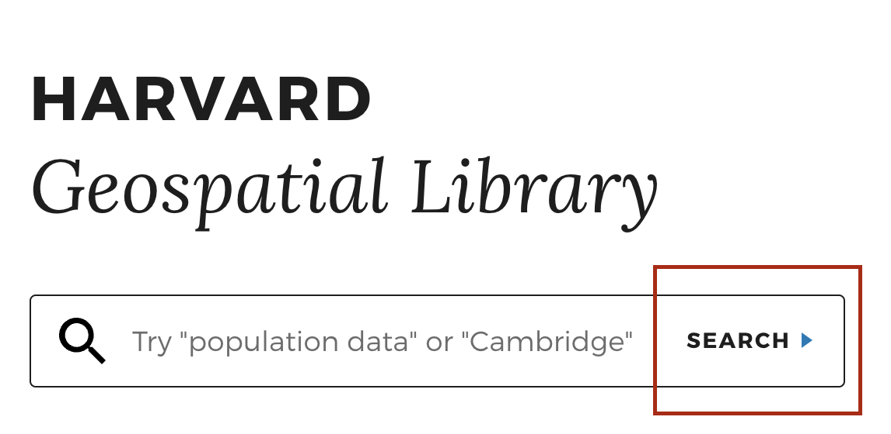

Group 4 [Georeferencing]
- Visit Atlascope.org , search for a place in Boston or Cambridge you are interested in exploring on a historical map, and experiment with toggling between different georeferenced map layers.
- Visit the Harvard Geospatial Library (HGL) .

- Click the
Searchbutton.
- In the left-hand side facets, under
FormatchooseGeoTIFF. UnderAccess, choosePublic. You can further filter results by theInstitutionwhich holds the source, thePlaceit depicts, or you can use theSearch Barto further refine results.
- Choose a result, and click
Click to Wakeon the map, to see a preview of the georeferenced image.
- Notice on the page where to download the
.geoTIFF, so that you could bring the file into your GIS project.
- If you have more time, you can choose to explore:
- the process for finding a historic map in the hundreds of thousands of maps in the Harvard Map Collection which have not already been georeferenced.
- how to turn georeferenced maps into digital vector data , and use that data to perform spatial analysis.
Be ready to share what you’ve learned with the group.